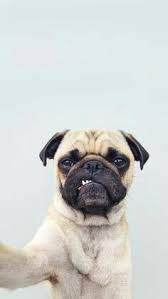
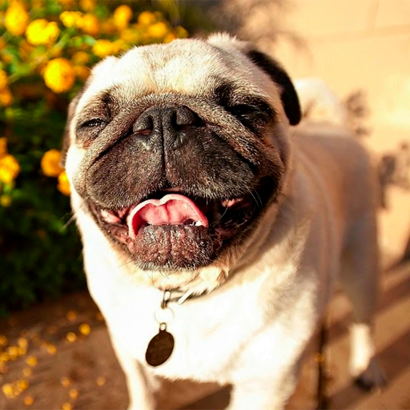
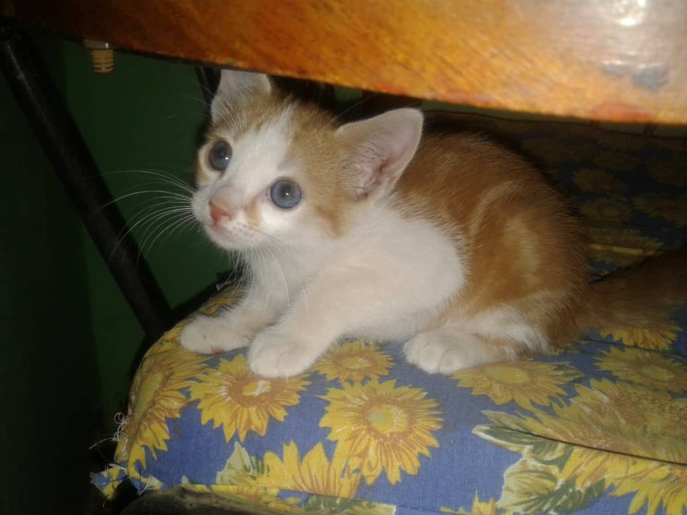
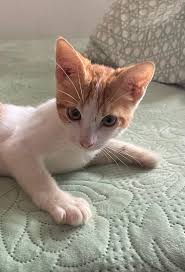
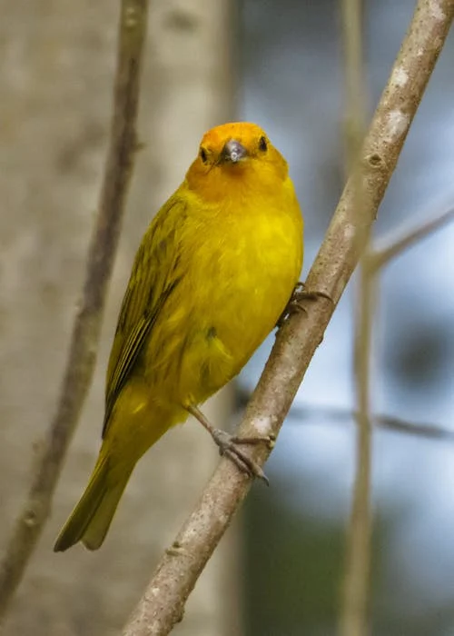

GRUÑOSA
Le gruñaba a la gente de la casa pero a la familia era un amor
Aquí comparto un poco de los seres que en algun momento me acompañaron en mi día a día.
TOTTY | MECHUDO | CANARIOS

Le gruñaba a la gente de la casa pero a la familia era un amor

La tuvimos muchos años, por lo tanto era un amor incondicional

Dormia todo el dia pero por las noches estaba super activo

Siempre atento a cualquier ruido y mataba lagartijas y ratones

Habia que darle cada rato aspilte porque comia cada rato

Cantaba varios trines por minuto, eran de mi abuelo y mi papá